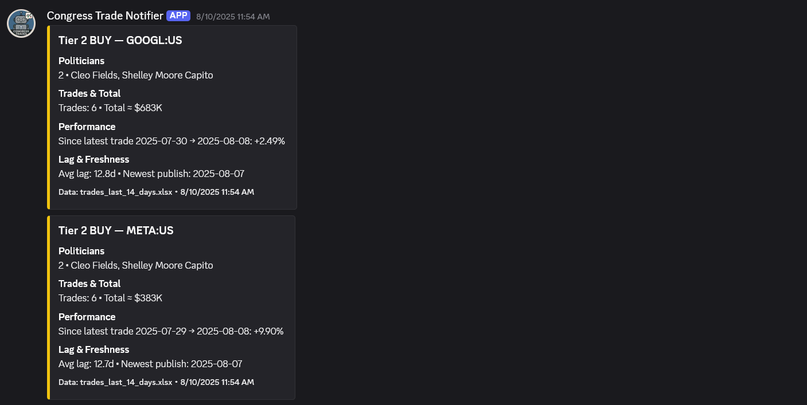
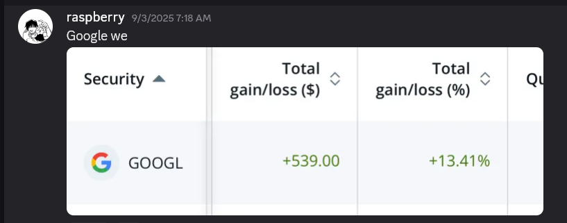

Congress Trade Tracker and Notifier
A bot that identifies profitable trading opportunities through a three-step process:
Step 1: Scrape Data
Scrapes all senator's trades every day to gather raw data (eg. price, traded date, size, etc ).
Step 2: Apply Filters
Applies filters to each trade and categorizes them in three tiers. Considering factors like reporting lag, number of politicians involved etc.
Step 3: Notify Users
Sends a notification when a trade is identified with a high probability of being profitable, delivering actionable insights.
The "Proof" - From Alert to Profit
One of the bot's alerts directly led to a significant return when Google's stock jumped 13% following a favorable court ruling. This section demonstrates the real-world value and effectiveness of the tool.
 Google rose 13 percent after a month when they won a court case letting them keep Chrome
The Problem It Solves
Retail investors are often at an information disadvantage. This bot levels the playing field by providing real-time access to valuable public data on congressional stock trades, delivered conveniently through Discord.
Features & Functionality
Technical Stack
- Language: Node.js
- Library: Discord.js
- APIs: Public APIs for financial and congressional data
- Hosting: Heroku / AWS